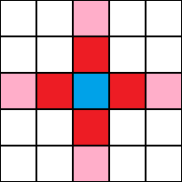

Miscellaneous
Edge case topics that you may need to know.
Created by John Robison
Finite State Machines
A computational model of a system that has distinct states. The system can transition between these states based on external events.
Example of a Turnstile State Machine

| Current State | Input | Next State | Output |
|---|---|---|---|
| Locked | coin | Unlocked | Unlock turnstile so customer can push through |
| push | Locked | None | |
| Unlocked | coin | Unlocked | None |
| push | Locked | When customer has pushed through, lock turnstile |
Types of State Machines
- Mealy Machine
- Moore Machine
Mealy Machine

Moore Machine

Cellular Automata
A grid of cells which can have a state of on or off (also referred to as "alive" or "dead").

The transitions between these states are determined by the number of living cells that exist around the current cell.
Neighborhoods
- Moore Neighboorhood

- Von Neumann Neighboorhood 
One Set of Basic Rules (Game of Life)
- If the cell is "alive" and has more than a set number of neighbors (usually 4), the cell will "die of overcrowding".
- If the cell is "alive" and has less than a set number of neighbors (usually 2), the cell will "die of loneliness".
- If the cell is "dead" and has more than a set number of neighbors (usually 3), the cell will "be born".
Backtracking

Sudoku Example
Sudoku Backtracking Code
# Takes a partially filled-in grid and attempts to assign values to
# all unassigned locations in such a way to meet the requirements
# for Sudoku solution (non-duplication across rows, columns, and boxes)
def solve_sudoku(arr):
# 'l' is a list variable that keeps the record of row and col in find_empty_location Function
l=[0,0]
# If there is no unassigned location, we are done
if(not find_empty_location(arr,l)):
return True
# Assigning list values to row and col that we got from the above Function
row=l[0]
col=l[1]
# consider digits 1 to 9
for num in range(1,10):
# if looks promising
if(check_location_is_safe(arr,row,col,num)):
# make tentative assignment
arr[row][col]=num
# return, if sucess, ya!
if(solve_sudoku(arr)):
return True
# failure, unmake & try again
arr[row][col] = 0
# this triggers backtracking
return False
Memoization
A type of dynamic programming where past values are saved in a table for faster computation later in a program's execution.
Chip's Memoization Code
def memoize(F):
# A hash table for storing previous states
hashed_states = {}
def memoized_F(*args):
# if we haven't memoized this state, calculate
# it. Then return it
if args not in hashed_states:
hashed_states[args] = F(*args)
return hashed_states[args]
return memoized_F
@memoize
def fibonacci(N):
if N is 0 or N is 1:
return N
else:
return fibonacci(N-1) + fibonacci(N-2)